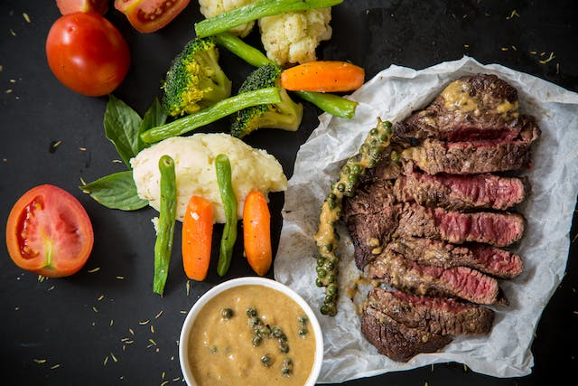

Fitness, Your Flavour: Pick Your perfect Workout Palette

Muscle Gain Diet Plan
- Focus on a calorie surplus with a balance of protein, carbohydrates, and healthy fats.
- Include lean proteins like chicken, fish, and tofu.
- Opt for complex carbohydrates such as brown rice, sweet potatoes, and quinoa.
- Incorporate healthy fats from sources like avocados, nuts, and olive oil.
Fat Loss Diet Plan:
- Create a calorie deficit through a balanced diet and regular exercise.
- Prioritize lean proteins to maintain muscle mass.
- Choose complex carbs in moderation and emphasize veggies.
- Include healthy fats for satiety, like avocados and fatty fish.
- Watch portion sizes and stay hydrated.
Maintenance and Toning Diet Plan:
- Maintain a balanced diet with a moderate calorie intake.
- Ensure an adequate protein intake for muscle maintenance.
- Include a variety of colorful fruits and vegetables for micronutrients.
- Choose whole grains and limit processed foods.
- Stay mindful of portion control.
Endurance Athlete Diet Plan:
- Emphasize carbohydrates for sustained energy levels.
- Include lean proteins and healthy fats for overall nutrition.
- Prioritize hydration with water and electrolyte-rich beverages.
- Eat regular, balanced meals to support training demands.
- Include nutrient-dense snacks for prolonged activities.
Vegetarian or Vegan Diet Plan:
- Ensure a variety of plant-based proteins such as beans, lentils, and tofu.
- Include a mix of colorful vegetables and fruits for nutrients.
- Incorporate whole grains like quinoa and brown rice.
- Include sources of healthy fats like nuts, seeds, and avocados.
- Consider supplementation for nutrients like B12 and iron.